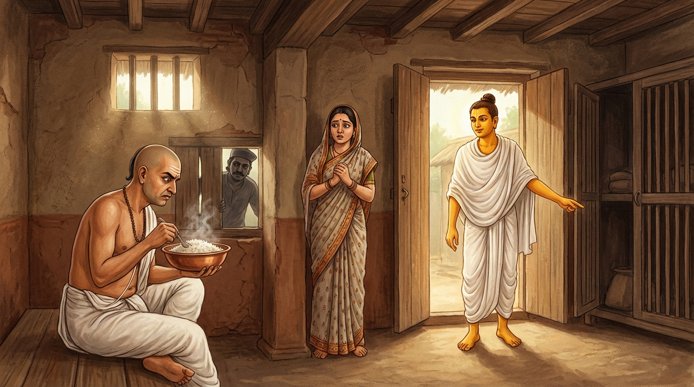

2. උච්ඡිට්ඨභත්ත ජාතකය (212)
“අඤ්ඤො උපරිමො වණ්ණො” (බතේ උඩ පැහැය වෙනස්ය) යන මේ දේශනාව බුදුරජාණන් වහන්සේ දෙව්රම් වෙහෙරෙහි වැඩවාසය කරන සමයෙහි, පැරණි බිරිඳගේ පෙළඹවීමක් මුල් කරගෙන වදාළ සේක. බුදුරජාණන් වහන්සේ විසින් “සැබෑද මහණ! ඔබ පැවිද්ද ගැන කලකිරී සිටින්නෙහිද?” යි විමසන ලදුව, ඒ භික්ෂුව “එසේය ස්වාමීනි, සැබෑය” යි පිළිතුරු දුන් විට, “කවරෙක් ඔබව කලකිරීමට පත් කළේද?” යි විමසූ සේක. එවිට හෙතෙම “පැරණි බිරිඳය” යි පැවසීය. ඉක්බිති බුදුරජාණන් වහන්සේ, “මහණ, මේ ස්ත්රිය ඔබට අනර්ථයක්ම කරන්නීය. පෙරත් තමන්ගේ සොර සැමියාගේ ඉඳුල් බත්, මේ ස්ත්රිය විසින්ම ඔබට කවන ලදී” යයි වදාරා අතීත කථාව ගෙනහැර දැක්වූ සේක.
අතීතයේ බරණැස් නුවර බ්රහ්මදත්ත රජු රාජ්ය කරන සමයේ, බෝධිසත්ත්වයෝ එක්තරා දිළිඳු, නටන කුලයක ඉපදී, වැඩිවියට පත්ව දුප්පත්ව විරූපීව හිඟමනේ හැසිරෙමින් ජීවිකාව ගෙන ගියහ. එකල්හි කාසි රට එක්තරා ගමක එක් බමුණෙකුගේ බැමිණියක් දුස්ශීලව, පවෙහි ඇලී අනාචාරයේ හැසිරුණාය. ඉක්බිති එක් දවසක් කිසියම් කටයුත්තක් සඳහා බමුණා පිටතට ගිය කල්හි, ඇගේ සොර සැමියා ඒ අවස්ථාව බලා ඒ ගෙට පිවිසියේය. ඇය ඔහු සමඟ අනාචාරයේ හැසිර, “මොහොතක් රැඳෙන්න, බත් කා යන්නෙහි යැ” යි පවසා බත් උයා, ව්යඤ්ජන සහිතව උණු උණු බත් බෙදා, “ඔබ අනුභව කරන්නැ” යි ඔහුට දී, තමන් බමුණා එන මඟ බලමින් දොරටුවෙහි සිටියාය. බෝධිසත්ත්වයෝ ද බැමිණියගේ සොර සැමියා අනුභව කරන ස්ථානයේ බත් ටිකක් ලැබීමේ බලාපොරොත්තුවෙන් සිටියහ.
ඒ මොහොතේ බමුණා නිවස දෙසට එයි. බැමිණිය එන්නා වූ ඒ බමුණා දැක, වේගයෙන් ගෙට පිවිස, “නැගිටින්න, බමුණා එන්නේය” යි කියා සොර සැමියා වී අටුවට බැස්සුවාය. බමුණා ඇතුල් වී හුන් කල්හි, බත් කන පුවරුව (ඵලකය) ළඟට කර, අත සෝදන පැන් දී, හොර සැමියා අනුභව කොට ඉතිරි වූ සීතල වූ ඉඳුල් බත්වලට උඩින් උණු බත් බෙදා බමුණාට දුන්නාය. හෙතෙම බතෙහි අත දමා බැලූ විට උඩින් උණුසුම්වත් යට බත් සීතලටත් තිබෙනු දැක, “මේ නම් අනිකෙකු විසින් අනුභව කර ඉතිරි වූ (ඉඳුල්) බත් විය යුතුය” යි සිතා, බැමිණියගෙන් විමසමින් පළමු ගාථාව කීවේය.
“බතේ උඩ කොටස එක් ආකාරයකි. යට කොටස තවත් ආකාරයකි. එබැවින් බැමිණිය, ඔබගෙන්ම විමසමි. යට බත කුමක්ද? උඩ බත කුමක්ද?”
එහි වණ්ණො යනු ආකාරයයි (ස්වභාවයයි). මොහු උඩ කොටස උණුසුම් බවත්, යට කොටස සීතල බවත් විමසමින් මෙසේ කීවේය. කිං හෙට්ඨා කිඤ්ච උප්පරී යනු සාමාන්යයෙන් බෙදා තිබුණු බතක් නම් උඩ සිසිල්වත් යට උණුසුම්වත් තිබිය යුතුයි. නමුත් මෙය එසේ නොවේ. ඒ නිසා උඩ බත උණුසුම්වත් යට බත සිසිල්වත් තිබෙන්නේ කුමන කරුණක් නිසාදැයි ඔබෙන් විමසමි.
බැමිණිය තමා කළ වරද හෙළිවේ යැයි බියෙන්, බමුණා නැවත නැවතත් ඒ ගැන විමසද්දීත් නිහඬව සිටියාය. ඒ අවස්ථාවෙහි නටපුත්රයාට (බෝධිසත්ත්වයන්ට) මේ අදහස ඇතිවිය: “කොටුවෙහි (අටුවෙහි) සඟවා ඇති පුරුෂයා සොර සැමියා විය යුතුයි. මේ ගෘහ ස්වාමියා විය යුතුයි. බැමිණිය තමන් කළ වරද හෙළිවන බිය නිසා කිසිවක් නොකියයි. එසේ නම් මම ඇයගේ ක්රියාව හෙළිදරව් කොට, සොර සැමියා අටුවෙහි සිටින බව බමුණාට කියන්නේ නම් මැනවි.” හෙතෙම බමුණා ගෙදරින් පිටව ගිය වේලාවේ පටන්, සොර සැමියා ගෙට ඇතුල් වීම, අනාචාරයේ හැසිරීම, සොර සැමියා විසින් බතෙහි අග්ර කොටස අනුභව කිරීම, බැමිණිය දොර ළඟ සිට මග බලාගෙන සිටීම සහ අනිකා වී අටුවට බැස සැඟවී ඇති බව යන ඒ සියලු පුවත් පවසමින් දෙවන ගාථාව කීවේය.

“පින්වත, මම නළුවෙක්මි. අහර සොයමින් මෙහි පැමිණි යාචකයෙක්මි. (ඔබ යමෙකු සොයන්නේද?) මේ කොටුවට බැස සැඟවුණේ ඔහුය. ඔබ සොයන්නේ ඔහුවය.”
එහි අහං නටොස්මි භද්දන්තෙ යනු ‘ස්වාමීනි! මම නටන කුලයේ කෙනෙක්මි’ යන්නයි. භික්ඛකොස්මි ඉධාගතො යනු ‘ඒ මම සිඟන්නෙක්ව බත් පතක් සොයමින් මෙතැනට ආවෙමි’ යන්නයි. අයංහි කොට්ඨමොතිණ්ණො යනු ‘ඇගේ සොර සැමියා වන මොහු මේ බත අනුභව කරමින් සිටියදී ඔබට බියෙන් අටුවට බැස්සේය’ යන්නයි. අයං සො යං ගවෙසසි යනු ‘මේ ඉඳුල් බත කවරෙකුගේ දැයි සිතමින් ඔබ යමෙකු සොයයිද, මේ සිටින්නේ ඔහුය’ යන්නයි. ඉන්පසු ඔහු සොර සැමියාගේ කෙස් වැටියෙන් අල්ලාගෙන අටුවෙන් පිටතට ඇද දමා, “නැවත මෙබඳු පාපයක් නොකරව” යි තර්ජනය කර සිඟන්නා යන්නට ගියේය. බමුණා ද ඒ දෙදෙනාට නැවත එබඳු පාපයක් නොකරන ලෙස තර්ජනය කිරීම්, තැළීම් හා පෙළීම් ආදියෙන් දඬුවම් කොට හික්මවා, කම් වූ පරිද්දෙන් මිය පරලොව ගියේය.
බුදුරජාණන් වහන්සේ මේ ධර්ම දේශනාව ගෙනහැර දක්වා, චතුරාර්ය සත්යය ප්රකාශ කොට ජාතක කථාව නිමවා වදාළ සේක. සත්ය දේශනාව අවසානයේ (කලකිරී සිටි) භික්ෂුව සෝවාන් ඵලයෙහි පිහිටියේය. “එකල බැමිණිය වූයේ දැන් මේ පැරණි බිරිඳය. බමුණා වූයේ මේ කලකිරුණු භික්ෂුවයි. එදා නළුවා වී සිටියේ ලොව්තුරා බුදු වූ මම ම වෙමි” යි වදාළ සේක.
උච්ඡිට්ඨභත්ත ජාතක වර්ණනාව නිමි.